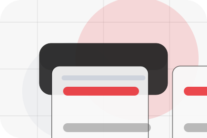
Pressure
Problem names the real friction visitors bring to the home route, so the page feels relevant before any claim is made.
Energy
Minimal energy product landing for cost reduction and resilience.

Home / 02
Problem frames the pressure behind the visit, then connects it to a practical path visitors can recognise and act on.
The copy avoids blame and panic. It shows the common friction, the practical consequence, and the calmer route Vault uses to move people forward.
Open Company
Problem names the real friction visitors bring to the home route, so the page feels relevant before any claim is made.
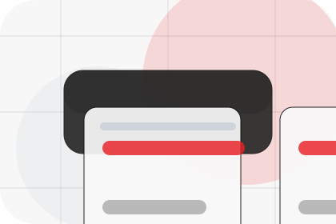
The copy connects that friction to practical risk, delay, confusion, or missed opportunity without exaggerating it.
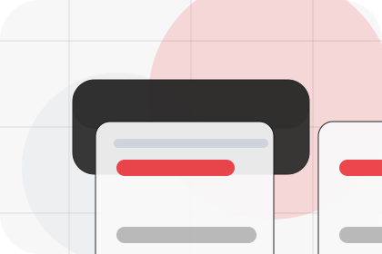
The final cue moves visitors toward a clearer route instead of leaving them with the problem alone.
Home / 03
Cost adds technical context to the home route, using the minimal energy product landing structure to support cost reduction and resilience before visitors choose a next step.
Vault uses product output cards and focused copy to make the decision easier to scan, aligning the section with cost reduction and resilience rather than filling space.
Open SolutionsCost gives the page a specific angle instead of repeating the navigation label.
The product output cards show what to compare, what to avoid, and what matters most for energy, power & renewable solutions visitors.
The final cue points to a useful internal route so the section keeps the journey moving.
Home / 04
Promise defines the better state Vault is built to create, with enough detail to make the promise believable.
A renewable energy product site with minimalist hero, savings modules, battery/solar cards, and direct calculator. The section grounds that direction in concrete benefits, visible tradeoffs, and a next route visitors can use when the promise feels relevant.
Open ServicesPromise defines what becomes clearer, easier, or safer when Vault is the chosen route.
The benefit is tied to cost reduction and resilience, not a vague quality claim.
Visitors get a linked path to compare the promise against services, standards, or examples.
Home / 05
Solutions defines the better state Vault is built to create, with enough detail to make the promise believable.
A renewable energy product site with minimalist hero, savings modules, battery/solar cards, and direct calculator. The section grounds that direction in concrete benefits, visible tradeoffs, and a next route visitors can use when the promise feels relevant.
Open SavingsVault structures solutions around better state, practical gain, and a clear next route so visitors can compare the block quickly before they calculate savings.
Calculate SavingsHome / 06
Savings shows what changes after the work: clearer decisions, visible progress, and proof points that connect the offer to real outcomes.
The layout connects before-and-after thinking with measured outcomes, making the result easy to scan without promising what the business cannot guarantee.
Open Projects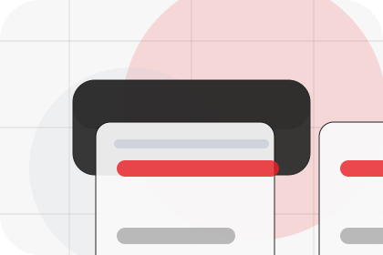
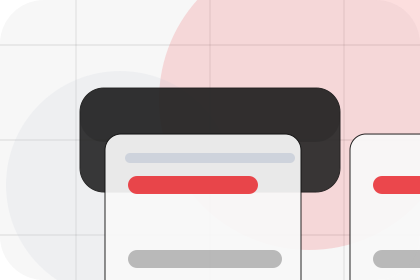
The uncertainty, delay, or missed opportunity visitors bring into savings.
Home / 07
Projects adds technical context to the home route, using the minimal energy product landing structure to support cost reduction and resilience before visitors choose a next step.
Vault uses product output cards and focused copy to make the decision easier to scan, aligning the section with cost reduction and resilience rather than filling space.
Open Pricing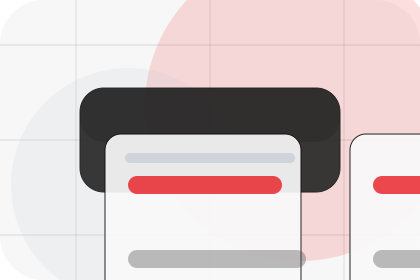
Projects gives the page a specific angle instead of repeating the navigation label.
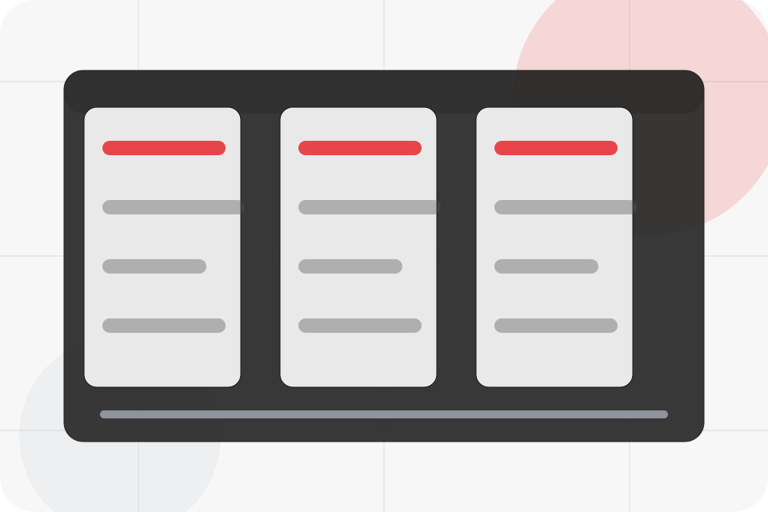
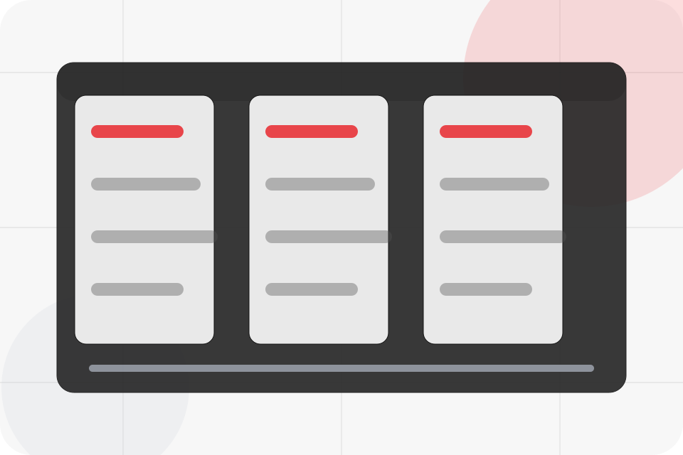
Home / 08
Trust gives the proof layer for home: standards, evidence, and reassurance that make the next decision feel grounded.
Instead of relying on vague claims, Vault presents visible standards, process cues, and proof artifacts that help energy visitors judge fit.
Open ResourcesVisible proof that helps visitors believe the claims behind trust.
The quality, safety, or operating expectation this section makes explicit.
What becomes clearer before someone decides whether to calculate savings.
Home / 09
Questions handles buying doubts directly so visitors can understand timing, fit, limits, and the safest next step.
Answers are short by design: enough to remove hesitation, not so much that the page turns into documentation before the visitor can act.
Open Contact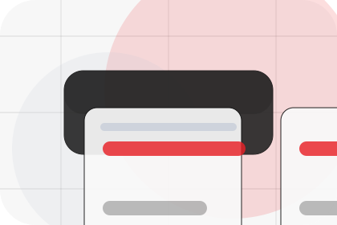
Questions gives the page a specific angle instead of repeating the navigation label.
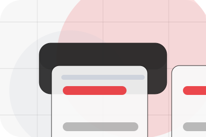
The product output cards show what to compare, what to avoid, and what matters most for energy, power & renewable solutions visitors.
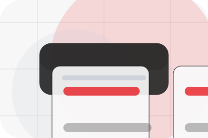
The final cue points to a useful internal route so the section keeps the journey moving.
Vault starts with a focused intake so the recommendation matches the visitor's context, risk, timing, and readiness.
Each route explains inclusions, exclusions, documents, timing, and the decision points that affect final delivery.
The theme uses minimal energy product landing, product output cards, and savings estimator, battery/solar toggle, project output counters rather than a shared template rhythm.
Centered product hero
Select the closest route and Vault keeps the next step, proof, and follow-up expectation aligned with cost reduction and resilience.
Home / 10
Vault closes the home route with a clear action, a quick reminder of the value, and a low-friction way to calculate savings.
Visitors who are ready can use the primary action. Visitors who are still comparing can scan the section links, proof, and support routes before they calculate savings.
Calculate SavingsThe final block keeps the choice simple: act now, compare one more proof route, or send enough detail for a focused response.
Calculate Savingscost reduction and resilience
A renewable energy product site with minimalist hero, savings modules, battery/solar cards, and direct calculator. Home ends with a direct path to calculate savings, plus enough context for visitors who still need to compare.
 Calculate Savings
Calculate Savings